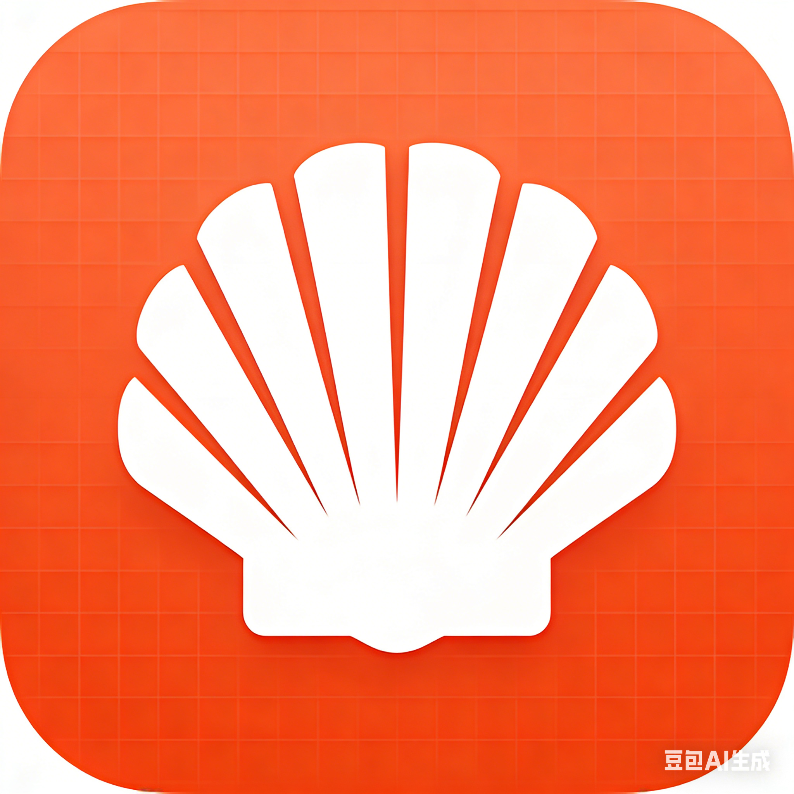

通过 `#` 描述目标，直接获得可执行命令建议，适合频繁切换上下文的开发和运维场景。

为 Windows 开发者重做的 AI 终端
把终端、模型配置和自然语言协作放进同一个工作台。
Auto Shell 不是把聊天框贴在终端旁边，而是把真正可落地的开发流程重组成一体： 多标签终端、模型切换、自然语言转命令、命令解释、AI 对话，以及适合 Windows 桌面环境的交互风格。
6+
内置模型入口，覆盖 MiniMax、GLM、Claude、OpenAI、Ollama 与兼容网关
即时
切换 Provider、Base URL 与 Model 后，下次请求立即生效
Windows
标题栏、标签栏和桌面语义重新校准，不再走 mac 式视觉
PowerShell · Active
PS D:\workspace\auto-shell> # 帮我生成上传安装包到服务器的命令
AI 命令建议已生成，按 Enter 应用
PS D:\workspace\auto-shell> npm run package:win
Packaging Windows NSIS installer...
Output: release\Auto Shell Setup 0.2.0.exe
PS D:\workspace\auto-shell> upload ./autoShell.exe root@192.144.130.162
Remote path: /autoShell/autoShell.exe
> 输入命令，或以 # 开头让 AI 帮你生成命令
AI 对话面板
直接问命令、报错原因、脚本写法，或者让模型整理部署步骤。
模型配置中心
支持选择当前模型、修改 Base URL、填写 API Key、切换默认 Model，并即时应用。
支持的模型入口
MiniMax
国内云端模型
GLM
智谱开放平台
Claude
Anthropic
OpenAI
官方与兼容接口
Why Auto Shell
不是加一个 AI 图标，而是把终端工作流真正串起来。
从命令输入到模型切换，再到自然语言协作和下载交付，Auto Shell 更像一张给开发者准备的“工作台桌面”，而不是又一个浏览器式壳子。
Provider、Base URL、Model 和 API Key 分离管理，切换后下一次请求立即使用新配置。
一边跑命令，一边向 AI 追问报错原因、脚本实现或部署步骤，不需要在多个软件之间反复切换。
Workflow Story
从“我想做什么”，到“命令已经跑起来”。
01
先说目标
直接对 AI 描述你的需求，例如“列出最近修改的文件”“生成部署命令”或“解释这段 PowerShell”。
02
再选模型
根据任务随时切换到 Claude、GLM、MiniMax、OpenAI、Ollama，或者接入你自己的 OpenAI 兼容网关。
03
最后落地执行
拿到命令建议、报错解释或完整回复后，直接回到终端执行，不打断原本的开发节奏。
Deployment
一个目录，既能展示，也能下载。
线上页面与安装包统一部署到同一目录，便于传播、更新与版本替换。
访问公开地址即可看到产品介绍、核心能力和下载入口。
https://dmfighting.top/autoShell
Windows 用户点击后即可直接下载当前可安装版本。
https://dmfighting.top/autoShell/autoShell.exe